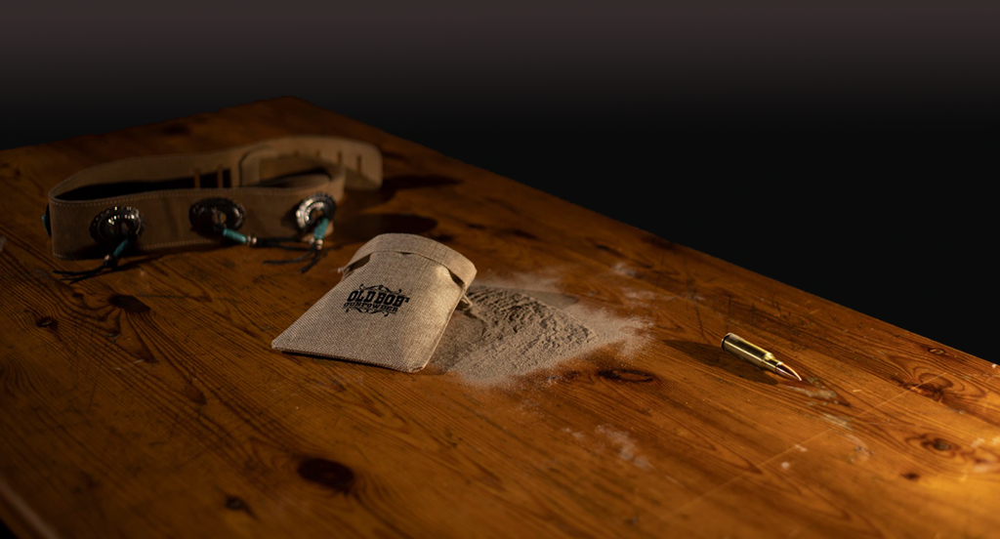

Old Bob Gunpowder - Gunpowder
Rilasciato in Maggio 2022
Lei mi vuole cambiare
più sensibile
Lei mi vuole ingabbiare in una prigione circolare
Mi vuole a sedere
Tutta la vita accanto a lei
Mi vuole plasmare, come piaccio a lei
Ne ho le palle piene
Non ti sarà facile
Portarmi vivo sull'altare
volevi stringermi un collare
sono libero
Lei mi vuole parlare
Aprire il suo cuore
Lei che non mi lascia stare mai
E lo chiama amore, che vuole stroncare
Il mio carattere animale
Ma non mi sta a sentire
Quando le dico che
Ne ho le palle piene
Non ti sarà facile
Portarmi vivo sull'altare
volevi stringermi un collare
sono libero
Come stringe il tuo folle amore
Dimmi cosa sei disposta a perdere
Dimmi cosa farai senza me
Non ti sarà facile
Portarmi vivo sull'altare
volevi stringermi un collare
sono libero
Una semplice evasione, strappa a un uomo le catene
Ho troppe colpe sulla schiena, e nessuno a stare in pena
È difficile scavare senza la mia dinamite
Ma gli stronzi come voi, non mi prenderanno mai
Cado in mare e tiro dritto, cento spari dietro al colle
Non è stata una grande idea, dare fuoco ad una moschea
Giuro che se ne esco vivo rigo dritto o duro poco
Non ci credo neanche io, resto a galla per non dire addio
Come è dolce naufragare, non sento più nessun dolore
Oh no, in questa merda prima o poi ci affogherò
E di notte penso a lei, cristo la vorrei
Ne ricordo l’odore ma non riesco a restarne aggrappato e mi chiedo perché
Lei mi fa il pieno di energia
Dura poco la mia fuga, tutto torna come prima
Conto il minimo ma devo rendere al massimo
Dissacrante e senza cuore, nuovo piano per fuggire
E gli stronzi come noi, non li prenderanno mai
Con gli occhi su in cielo, le gambe nell’acqua
Spero a dio non spiaccia se resto ancora un po'
Maledetti bastardi
Io sono ancora vivo!
Chiuso dentro una scatola, faccio evadere la mia fantasia
Ma sono sbarre di plastica a non farmi uscire
In verità non me ne frega niente
Ho paura a fuggire di qua
Questa gabbia me la sono cucita addosso
Penso di prendere e mai di dovere
Non credo in niente
SENZA USCIRE, CONTINUAMENTE TENGO LE DISTANZE
DAI MIEI COMPAGNI DI PRIGIONE
LENTAMENTE, TROVO LA MIA DIREZIONE
QUESTO SISTEMA È UNA LUNGA CATENA TRA NOI
Sono un borghese piccolo piccolo, nella mia scatola mi agito mi agito perché
All’interno di quattro mura, sono invincibile
Cristo quanto cambierei
Questa prigione di plastica mi da l’impressione di poter scappare via
Ma ho paura che fuori di qua, ci sia un'altra scatola
SENZA FINE, CONTINUAMENTE TENGO LE DISTANZE
DAI MIEI COMPAGNI DI PRIGIONE
LENTAMENTE, TROVO LA MIA DIREZIONE
QUESTO SISTEMA È UNA LUNGA CATENA TRA NOI
NON RIESCO PIÙ A SCAPPARE VIA
Altra notte ancora sveglio
Faccio fatica a volte a respirare
Questa non è una vita, è la mia condanna
Poggio sulle labbra un’altra sigaretta
SENTI COME STRINGE
È UN LACCIO STRETTO FORTE
VOGLIO RESPIRARE
Lascio la mia vita senza fare rumore
Ho il vecchio Bob fuori ad aspettare
Quel pazzo darà fuoco a tutta la via
Odia casa, chiesa e questa ipocrisia
SENTI COME STRINGE
È UN LACCIO STRETTO FORTE
VOGLIO RESPIRARE
SONO NELLA CONDIZIONE DI COMBATTERE
QUESTO SISTEMA MI SPINGE FUORI
IO PROVO A RESISTERE
Respingo il vuoto che ho dentro al cuore
Ci provo amore a non affondare
Hai paura di me babe
Questa mia vita è una partita a carte
SENTI COME STRINGE
È UN LACCIO STRETTO FORTE
VOGLIO RESPIRARE
VEDIAMO CHI RESISTERA
SONO NELLA CONDIZIONE DI COMBATTERE
QUESTO SISTEMA MI SPINGE FUORI
IO PROVO A RESISTERE
Sei, sempre positivo e pieno di energia
Noi, ti siamo sempre dietro qualsiasi condizione sia
E tu vuoi, arrivare prima di chi è già seduto
Hai, una serpe infame al posto delle vene
MA VEDRAI CHE SAPRÒ RIALZARMI ANCH’IO
VEDRAI AVRAI IL MIO FIATO SUL COLLO
PUOI RESTARE CHIUSO LI
IO GIURO VENGO A PRENDERTI
HO IL TUO SANGUE FRA LE DITA
Sei il migliore in campo, pieno di attenzioni
Sei, il centro dell’universo e gira tutto intorno a te
Sai, ci tieni a far notare le mie differenze
Hai, una serpe infame al posto delle vene
MA VEDRAI CHE SAPRÒ RIALZARMI ANCH’IO
VEDRAI AVRAI IL MIO FIATO SUL COLLO
PUOI RESTARE CHIUSO LI
IO GIURO VENGO A PRENDERTI
HO IL TUO SANGUE FRA LE DITA
Passi, ne ho mossi tanti credimi
La strada alle mie spalle a volte non c’è più
Dovrei, ricominciare un’altra volta ancora
Dimmi, che non viaggio da solo
Si sposta l’orizzonte ad ogni mio passo
Chiuderò un milione di porte
Godendomi il resto e lasciando una parte di me
Dovrei, ricominciare un’altra volta ancora
VORREI TORNARE SUI MIEI PASSI
MA SENZA I MIEI ERRORI NON SAREI CIÒ CHE SONO ORA
VORREI CORREGGERE I MIEI SBAGLI
O FORSE DOVREI ACCETTARE CHE
SONO L’UOMO CHE SONO
VORREI TORNARE SUI MIEI PASSI
MA SENZA I MIEI ERRORI NON SAREI CIÒ CHE SONO ORA
SI MA VORREI FERMARE I MIEI RIMPIANTI
PER NON VOLTARMI E CONTINUARE A VIVERE
Niente cose da dire, solo cose da fare
Non è normale
Amico stai a sentire
Non voglio mai smettere, di fare qualcosa che mi renda felice
Ma fa tanto male
Sono un dipendente
Ora voglio fumare
Dai dammi da accendere, che è lunga la notte
Non voglio cambiare idea
Voglio fare l’amore, vuoi?
Sento scoppiare i cazzi miei
Non voglio più smettere e voglio entrare dentro te
Sessodipendente
Ora versa da bere
Ho una sete infernale e non la voglio fermare
Alcoldipendente
Ho un cuore che batte come due
Un anima che stà sulle sue
Voglio solo risplendere e tu non fare niente
Sono un dipendente
Il cuore mi batte più forte stanotte
Lo lascio stare che vuoi che sia
Sono un dipendente
Non la senti che fame
Provo quasi piacere
È la grande abbuffata
Ci lascio le penne
Ho il più grande stomaco
Mangio sino al vomito
Mordo il mio dietologo
Cibodipendente
Mangio e non me ne frega niente
Bulimia, masturbazione compulsiva, assuefazione, sindrome d’astinenza
Dipendenza fisica e psicologica
Non tollero la realtà
Prendo il mio grammo che trito nel grinder, lo stendo sul palmo e mi aiuta a star calmo
Già dalla mattina, tiro cocaina, è la mia benzina
Non riesco proprio a smettere
Tossicodipendente
IL CUORE MI SCOPPIA NEL PETTO STANOTTE
LO LASCIO ANDARE IN CARDIOPATIA
SONO UN DIPENDENTE
Ma chi sei, dimmi un po' il tuo nome
Dove vai, cerchi di scappare
Tanto ormai sai di sprofondare
Ora la vita non conta niente
Senti voci, stai per impazzire
Ora la notte vuole cominciare
Vuoi fermarla, sta per ritornare
Quella parte che è dominante in te
Notte scura e un blues hai nelle vene
È un veleno che punta dritto al cuore
Molli tutto per lasciarti andare
Se guardi indietro non trovi niente
Corri nudo, una chitarra sulla schiena
Grondi vino sotto questa luna piena
In mezzo a questo incrocio maledetto
Getti l’anima in fondo ad un pozzo
Giù nel più profondo
CORRI VIA MENTRE ULULI
ALLA LUNA PIENA
EHI NON È POI TANTO MALE
ORA IN CITTÀ SALE UN GRIDO ANIMALE
Forza amico, dai non farti prendere
Hai il diritto anche tu di esistere
Ora in testa hai solo un’idea
Farti esplodere e volare via
Senti voci stai per impazzire
Ora la notte vuole cominciare
Vuoi fermarla, sta per ritornare
Quella parte che è dominante in te
CORRI VIA MENTRE ULULI
ALLA LUNA PIENA
EHI NON È POI TANTO MALE
ORA IN CITTÀ SALE UN GRIDO ANIMALE
Come in quel gioco da bambini
Io corro dietro te
Mi prendi per mano e la tua voce
È il ricordo più bello che ho
Io questo vuoto che c’è
Lo affronto insieme a te
Ed è qui che il tempo ci prese con se
Ferisce il tempo mica uccide
In questo deserto che è in me
Come una duna ci divide
Giuro dolce ti ritroverò
In questo vuoto che è in me
Mi perdo senza te
Cadono gocce di sabbia fra noi
Arranco maledetto sole
Vivere è impossibile
Sento lontano la tua voce
Forse è un miraggio lo so
Io questo vuoto che c’è
Lo affronto insieme a te
Se vai via strappami il cuore perché
Batteva solo per te
Vita mia aspetterò
Cover di Il Tempo di Morire - Lucio Battisti
Registrazioni, mix e mastering effettuate da Valerio Libera presso Kloaka Studio (Roma)

 English
English